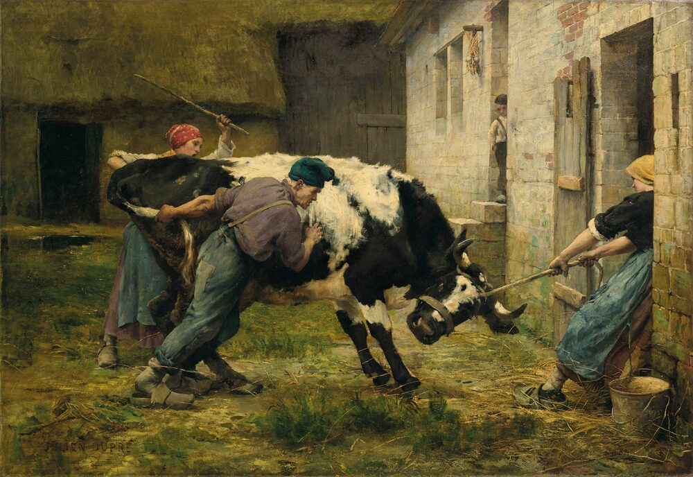
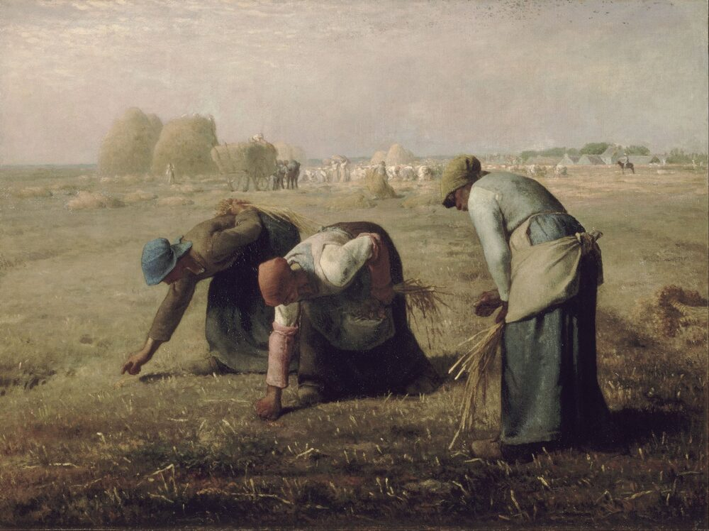

B1 · Work & Career
A Day on the Farm
Cattle, paperwork and decisions — and the difference between doing something and making something.
Play the audio and follow along, then read it again on your own. Tap or hover over a highlighted word to see what it means.
Trent starts before the sun does. The cattle are fed first, because everything else on the farm has to wait until they are, and by the time the light comes up he has already done the milking. Then he walks the fence line. There is always something to repair, and it is cheaper to do the repairs in the morning than to spend the afternoon looking for an animal that got through a gap.

Once the chores are behind him, he sits down with a coffee and makes a plan for the week. The cattle are moved between fields on a rotation, so that the grass in each one gets time to recover, and working out the order takes more thought than people expect. He makes a list of what needs ordering — feed, mineral blocks, a part for the water pump — and makes a few adjustments to the feeding schedule, because two of the younger cows have not been putting on weight the way they should.
In the afternoon he does a health check on the herd. This is the part of the job that cannot be hurried: he looks at how each animal is standing, how it is walking, whether its coat looks right. He makes notes in a journal as he goes, and those notes are the reason he usually catches a problem early. Later, when the light starts to go, he does the evening rounds to make sure everything is settled and nothing has got out.
There is a more technical side to the work as well, and Trent has come to rely on it. He does blood tests on a few of the cows every month to keep track of their mineral levels, and once a year he has the soil in the grazing fields analyzed, which tells him what the grass is short of before the cattle show him. He also does a review of the vaccination records each spring, so that nothing gets missed.
When the data says something needs to change, he makes the decision and acts on it. Last winter that meant making contact with a nutritionist and changing the ration for the whole herd. This year it means making a plan for a bigger barn — he has already made a rough layout, with more space between the pens and better ventilation, because the airflow in the current building is the reason coughs travel through it every February.

The part nobody warns you about is the paperwork. Doing the paperwork for the farm regulations takes a full day every month, and doing it badly is expensive, so he does it properly and keeps everything where he can find it.
By the time the moon is up, Trent is usually too tired to be philosophical about any of it. But the work has a shape he likes: you do the tasks, you make the decisions, and if you have done both well enough for long enough, the herd is healthy and the farm keeps going. That is most of what there is to it.
Key Vocabulary
- chores the routine jobs that have to be done every day
- fence line the boundary fence of a field, walked to check for damage
- to recover to return to a healthy state after being used or damaged
- feed food given to farm animals
- to put on weight to become heavier
- herd a group of cattle kept together
- coat an animal's fur or hair, whose condition shows its health
- rounds a regular circuit made to check that everything is in order
- to keep track of to follow something over time so you notice changes
- to be short of to lack enough of something
- layout a plan showing how a space is arranged
- pen a small fenced enclosure for animals
- regulations official rules a business has to follow
A Day on the Farm — B1 · Work & Career · Renan the Teacher, English Language Academy · https://renangrossi.github.io/englishclasses/reading/b1/do-make-livestock-farming.html
Interactive Exercises
Practice
Complete each exercise, then click Submit to see your score and an explanation for every answer.
Speaking & Writing
Discussion
There are no right answers here — use these to practice speaking, or write a short answer to each.
- Trent says a problem is usually caught early because of his notes. What do you write down at work, and what happens when you don't?
- Which part of this job would you find hardest — the early start, the observation, or the paperwork?
- Describe your own working day using at least four do/make collocations from the exercise.
- The text says the farm's technical side tells Trent things “before the cattle show him”. Where else is it better to measure than to wait?
- Write about 120 words about a job you know well, separating the tasks you DO from the decisions you MAKE.